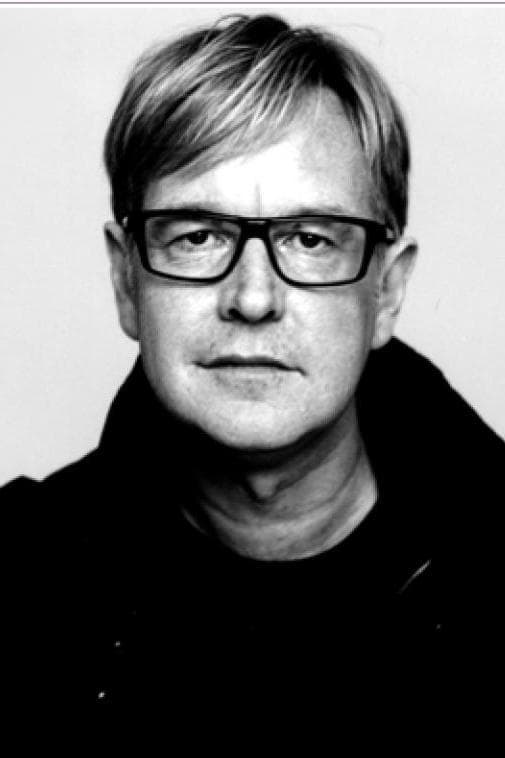
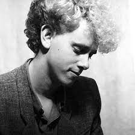
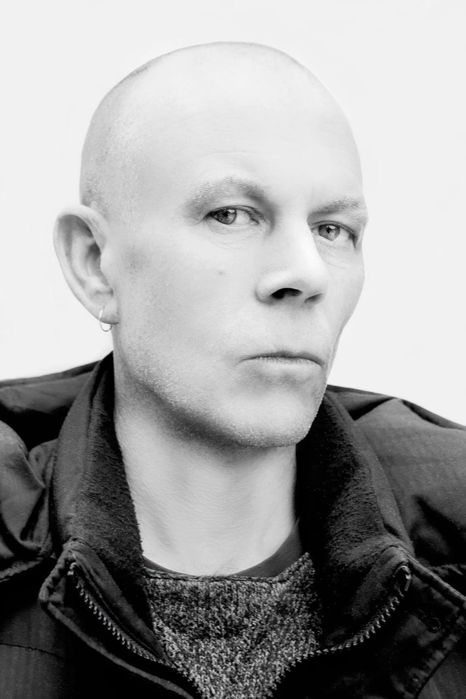
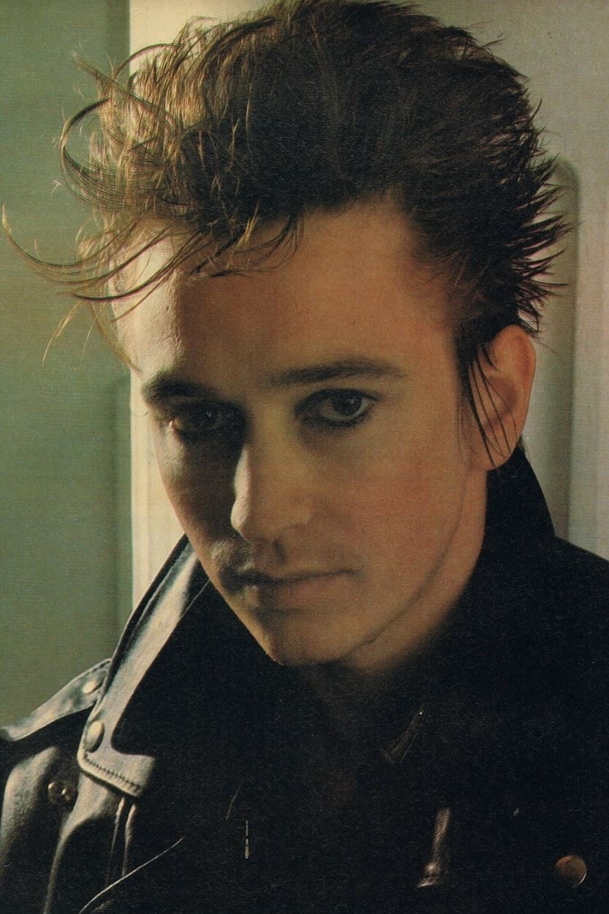

Nació en Epping (Essex) el 09 de mayo de 1962, pero desde niño llegó a vivir a la población de Basildon en el mismo condado. Su verdadero padre le abandonó a él y a su madre cuando apenas era un bebé. Su madre se volvió a casar y el pequeño Dave adoptó el apellido (Gahan) de su padrastro, al que siempre quiso como su verdadero padre. Su auténtico padre, de origen malayo, falleció cuando Dave apenas tenía siete años. Su primer matrimonio fue con su novia de adolescencia, Joanne Fox, en 1985, y tuvo a su primer hijo Jack en 1987. Gahan se divorció de Joanne en 1991 para casarse de nuevo, esta vez con Theresa Conroy de la que se divorciaría en 1996. En la actualidad está casado con Jennifer Sklias, desde 1998, y tienen dos hijos en común, llamados Jim y Stella Rose. Desde muy joven siempre fue un chico rebelde, en sus propias palabras "salvaje", y varias veces pisó las cortes para menores por conducir motos a velocidad prohibida y por rayar paredes. Siendo un poco más grande, con unos amigos formó una agrupación juvenil llamada The Vermin identificada con el movimiento punk de los 70’s, en la cual pretendían emular a bandas como The Clash y The Sex Pistols, hasta que en 1980 se encontraba cantando, casi tarareando, Heroes de David Bowie en un salón de eventos artísticos del condado donde lo oyó Vince Clarke y pronto lo contactó ofreciéndole convertirse en la voz de su grupo, Gahan aceptó entrar a Composition of Sound en donde conoció a Martin Gore y a Andy Fletcher y lo primero que hizo fue rebautizar a la banda como Depeche Mode, nombre que tomó de estar hojeando una revista de modas de Francia así llamada. Clarke abandonó el proyecto después de concretar el primer disco, Gahan sin embargo, aun y cuando ha llevado a cabo su propio proyecto musical, ha permanecido hasta la fecha con Gore y con Fletcher en el grupo Dave Gahan es uno de los pocos vocalistas de un grupo que durante años se ha dedicado casi exclusivamente a cantar, razón por la cual la imagen y el éxito de la banda siempre han recaído sobre él, así como los excesos. En 1986 comenzó a tener experiencias con drogas, problema que se fue agravando particularmente con las giras de 1987-88 Music for the Masses Tour (con motivo del álbum Music for the Masses), World Violation Tour de 1990 (del álbum Violator), y sobre todo con el Devotional Tour de 1993 (del álbum Songs of Faith and Devotion) que además se extendió en 1994 como Exotic Tour, todo lo cual llevó a Gahan a su punto más crítico en 1995 cuando tuvo un paro cardiaco de dos minutos. Durante el resto de 1995 y el comienzo de 1996 cayó y recayó intermitentemente en las drogas, hasta que recibió una advertencia de las autoridades norteamericanas de impedirle la entrada a los Estados Unidos si no solucionaba su adicción, irónicamente fue por ello que comenzó a enmendarse y para 1997 logró superar por completo el problema. El más conocido aporte de Dave Gahan a Depeche Mode es sin duda que precisamente él sugirió ese nombre, el cual tomó de estar hojeando una revista de modas de Francia así llamada. Sin embargo muchos reconocen que su carisma, dominio y presencia escénica han contribuido en mucho al éxito del grupo; además, su característica voz, grave y nasal, es todo un distintivo del grupo e incluso considerada por algunos como una influencia del movimiento de música electrónica mismo. Fue hasta 1992 que se presentó a trabajar con sus compañeros completamente convertido en una estrella de rock, con el pelo largo y tatuajes, en buena medida a él se debió el sonido meramente rock del álbum Songs of Faith and Devotion de 1993, época en la que estaba más hundido en su problema de drogas. Para 1997 habiendo superado su adicción incluso tomó clases de canto, y para el 2002 después de que Depeche Mode dejara atrás también la que es probablemente su época más difícil se puso a trabajar en su primer esfuerzo solista en donde, junto con su amigo el guitarrista Knox Chandler (quien participó en el álbum Exciter de DM), compuso buena parte de sus propias canciones. Su disco se llamó Paper Monsters e incluso realizó una gira para la cual incluyó dentro de su repertorio algunos de los más gustados éxitos de Depeche Mode. Habiendo logrado lo que pocos músicos, superar un muy fuerte problema de drogas, para el último disco de Depeche Mode, Playing the Angel, Gahan animado por el éxito obtenido con su propio disco compuso tres temas, Suffer Well, I Want It All y Nothing's Impossible, los cuales fueron musicalizados por Andrew Phillpott y por Christian Eigner (quien se ha convertido en el baterista de Depeche Mode) y de los que el primero fue seleccionado incluso como sencillo promocional del álbum. Es la primera vez que Dave Gahan aporta canciones a Depeche Mode. Gahan reveló que escribió una veintena de canciones para Depeche Mode. En la actualidad, Gahan ha publicado su segundo álbum solista titulado Hourglass, el cual concibió otra vez junto con Eigner y Phillpott, un trabajo muy cercano a su reciente aporte a Depeche Mode. Dave Gahan ha participado en todos los discos y todas las giras de Depeche Mode. 
Andrew John “Fletch” Fletcher (nacido en Nottingham en 1961) es un músico inglés conocido por ser el tercer miembro del grupo de música Depeche Mode.
Nació en Nottingham pero creció en Basildon, en Essex, donde en la escuela aun siendo niños jugaba con Martin Gore. En 1976 formó con Vince Clarke un dueto llamado No Romance in China, no habiendo logrado nada, después Clarke formó precisamente con Martin Gore, un nuevo grupo al cual Andrew se reintegraría en 1979 para formar el trío Composition of Sound que al poco tiempo, con el ingreso del cantante David Gahan, cambió su nombre a Depeche Mode.
De personalidad depresiva, Andrew Fletcher nunca tuvo algún talento especial para la música, únicamente su amistad incondicional con Martin Gore, por lo que en un principio se dedicó a llevar las cuentas de lo que obtenían, prácticamente hizo de manager del grupo durante sus primeros años hasta que Jonathan Kessler tomó ese lugar en 1986. Además de ello Fletcher siempre ha participado como teclista con Depeche Mode.
Vince Clarke había abandonado al grupo después de su primer disco, tras unos meses fue sustituido por Alan Wilder quien contrario a Andrew resultó ser enormemente talentoso. Curiosamente Andrew fue el primer miembro del grupo que realizó un proyecto solista, en 1984 cuando grabó su álbum Toast Hawaii en el cual Martin Gore y Alan Wilder colaboraron tocando el piano. El disco consistió de covers de distintas canciones, sin embargo la discográfica lo encontró con muy poco potencial comercial y sólo se editaron unas cuantas copias por lo que actualmente es un material raro muy difícil de encontrar.
Después de ello, poco a poco, su relación con Wilder se fue deteriorando, pues Wilder siempre le hacía constantes reclamos a Andrew por no aportar musicalmente nada al grupo. Supuestamente ambos tuvieron una discusión subida de tono en un concierto en Salt Lake City en la gira del Music For The Masses.
Su carácter depresivo provocó en algunas ocasiones su ausencia en Depeche Mode, así en 1990 desapareció poco antes que concluyeran su disco de ese año, Violator, y en 1994, cuando el Devotional Tour se extendió por Sudamérica, Canadá y Estados Unidos como Exotic Tour, Andrew abandonó a la banda por lo que Daryl Bamonte tomó su lugar para concluir la gira.
En 1995 Alan Wilder abandonó el grupo y Depeche Mode entró en la peor crisis que habían tenido hasta ese momento, mucho se habló de la posible disolución de la banda. En 1996 Andrew se reunió con Martin Gore para comenzar a trabajar en un nuevo disco, se pensó muy seriamente en prescindir de David Gahan quien parecía irremediablemente sumergido en su adicción a las drogas, sin embargo la presencia de Andrew resultó ser el factor de unidad que sacó adelante a la agrupación, después de todo Martin Gore tan sólo era un músico genial con problemas y Dave Gahan era un estupendo cantante con muchos más problemas, pero con Andrew eran un grupo.
En los últimos años ha asumido el papel de portavoz oficial de Depeche Mode, y ha viajado por el mundo presentándose con éxito como DJ.
En el 2003 fundó su propio sello discográfico especializado en promover música electrónica, Toast Hawaii, de donde el dueto Client ha logrado obtener atención de la prensa y del público.
Es de llamar la atención que en los cuatro álbumes de Depeche Mode como trío, A Broken Frame de 1982, Ultra de 1997, Exciter del 2001 y Playing the Angel del 2005, Fletch tiene una mayor participación vocal, una especie de hincapié acerca de que el grupo en esos discos está conformado tan sólo por tres personas.
Para el álbum de Depeche Mode Playing the Angel, Fletcher tocó el bajo en las canciones A Pain That I'm Used To y The Sinner in Me.
Andy Fletcher ha participado en todos los discos de Depeche Mode.
Es un fiel seguidor desde niño del Chelsea F.C. al que ha acompañado en varios desplazamientos en competiciones europeas.
Tiene una casa en la localidad catalana de Sitges, en España.
Martin Lee Gore (nacido el 23 de Julio de 1961), es un músico inglés conocido por ser el compositor de Depeche Mode.
Nació en Dagenham, Londres pero siendo aún pequeño su familia se trasladó a Basildon en el condado de Essex, una población más bien rural, en la escuela siendo todavía niño conoció a Andrew Fletcher, de su misma edad y con quien se reencontraría después.
En 1979 formó con Vince Clarke y con Rob Marlow un grupo llamado French Look, al poco tiempo se incorporaría su conocido Andrew Fletcher en lugar de Marlow dando origen al trío Composition of Sound. Poco tiempo después se unió al grupo el cantante David Gahan y la banda cambió su nombre a Depeche Mode. Fue así, como cuarteto, que consiguieron grabar su primer disco,Speak & Spell, para el cuál Vince Clarke compuso casi la totalidad de las canciones, Martin compuso una canción, Tora! Tora! Tora!, y un tema electrónico instrumental, Big Muff, para ese disco.
Después de ese primer trabajo Vince Clarke abandonó al grupo, razón por la cual, habiendo apenas iniciado Martin se vio “obligado” a convertirse en el compositor de la banda, la primer canción que escribió para Depeche Mode ya sin la presencia de Clarke fue See You y se convirtió en el mayor éxito que habían tenido hasta ese momento, desde entonces ha sido el compositor casi único de la banda, logrando llevar a Depeche Mode a niveles de éxito que no habían esperado, aunque para ello también tuvo mucho que ver Alan Wilder quien en un principio entro sólo como el sustituto de Vince Clarke.
Durante el segundo lustro de los ochentas y primero de los noventas tuvo problemas de alcoholismo y de drogas parecidos a los de Dave Gahan aunque no tan extremos, dando con ello motivo a la separación de Alan Wilder del grupo en 1995.
En 1989 publicó el Counterfeit e.p., un disco constituido por covers, y para el 2003 editó Counterfeit², que sin embargo no han conseguido la exposición masiva de Depeche Mode.
En agosto de 1994 Martin contrajo nupcias con Suzanne Boisvert con quien tuvo a sus tres hijos: Viva Lee Gore (nacida en 1991), Ava Lee Gore (nacida en 1995) y Kalo (nacido en 2002), su único hijo varón. Poco antes de la publicación del último disco de Depeche Mode, Playing the Angel, Martin dio a conocer su divorcio, el primer sencillo, Precious, está inspirado en ello.
Martin Gore ha realizado presentaciones como solista, en las que, al igual que David Gahan, ha tocado también algunos éxitos de Depeche Mode. También, como su amigo Andrew Fletcher, ha viajado por el mundo y hecho presentaciones como DJ.
Martin Gore ha participado en todos los discos y todas las giras de Depeche Mode.
Vincent John Martin nació en South Woodford en Essex, Inglaterra, pero creció en Basildon en el mismo condado. Hijo de Dennis Martin y Rose, tiene tres hermanos: Carol -su hermana mayor- y sus hermanos menores Rodney y Michael -apodado Mick-. Desde niño tomó clases de violín y de piano. Zurdo para escribir -aunque toca la guitarra como diestro-, en 1976 integró una banda llamada No Romance in China donde se encargó de tocar la guitarra y cantar, mientras Andrew Fletcher tocaba el bajo. Susan Ryder Paget (más conocida como Sue Paget, quien tocaba el bajo y hacía coros en The Vandals -banda donde también estaba Alison Moyet-), y Pete Hobbs -batería- completaron la formación. Hobbs también tocaba en otra banda llamada Norman and the Worms con Phil Burdett y Martin Gore. En 1979, Vince formó otro dúo de guitarras con Robert Marlow, llamado The Plan, al que se incorporarían Perry Bamonte -quien en el futuro integraría la banda The Cure- en bajo y Paul Langwith como baterista. Poco tiempo después, Marlow cambiaría su guitarra por un sintetizador. Poco tiempo después, Robert Marlow y Gore forman la banda French Look. Al tiempo que esto sucedía, Vince retoma su sociedad con Fletcher e incorporan a Gore, entonces nace Composition of Sound. Al principio, Vince cantaba y tocaba la guitarra, Fletcher y Gore se repartían entre bajo y guitarra. Existen versiones que dicen que Vince tocó en French Look pero no hay confirmación de esto. Tras un breve receso, French Look suma a Paul Redmond como integrante. Realizan dos presentaciones donde tocan junto a Composition of Sound -Gore, quien participaba en ambas bandas, debía cambiarse de vestuario para disimular-. Finalmente, Gore se quedaría en Composition of Sound. En 1980 el trío se encontraba ensayando en un salón de eventos artísticos del condado, en donde Vince escuchó a un chico llamado David Gahan cantando “Heroes” de David Bowie, al que pronto invitó a convertirse en el cantante de su grupo. Gahan aceptó y sugirió cambiar el nombre a Depeche Mode. Vince cambió la guitarra por un sintetizador y pronto lo siguieron Gore y Fletcher interesados también por el género electrónico, si bien Vince era el único que verdaderamente dominaba el teclado. Ya como Depeche Mode, el ahora cuarteto de tecnopop consiguió grabar la canción Photographic, escrita por Vince, para un recopilatorio de nuevas promesas, en un pequeño sello promotor de música electrónica llamado Some Bizzare Records, del productor Stephen John Pearce, conocido como Stevo. Vincent John Martin decidió cambiar su nombre por el de Vince Clarke, ya que cuando empezaron los shows, él se encontraba acogido al seguro de desempleo. Poco después lograron grabar su primer disco, concebido casi completamente por Vince excepto por dos temas de Gore, en otro sello pequeño de música electrónica de nombre Mute Records, de Daniel Miller, ello por la insistencia de Clarke de no acercarse a las grandes compañías de música y conservar un espíritu independiente. Fue así que Clarke dio al grupo su primer gran éxito, el tema bailable Just Can’t Get Enough, mientras el tema New Life, también de Clarke, lograba otro relativo buen impacto, y sorpresivamente el disco debut de Depeche Mode, titulado Speak & Spell, obtuvo más éxito del que incluso Miller había esperado. No era lo que Clarke había deseado, él quería trabajar en el estudio y seguir explorando el potencial de los sintetizadores, por lo cual, después de ese primer disco, abandonó el grupo. Además de su álbum debut, Clarke participó únicamente en las dos primeras breves giras de Depeche Mode, conocidas sólo como 1980 Tour y 1981 Tour. Yazoo En 1981, tras dejar Depeche Mode, Vince Clarke respondió un aviso publicado por la cantante Alison Moyet, también de Basildon y así nació el dueto Yazoo. Yazoo grabó dos álbumes con los que alcanzó el segundo y el primer puesto del ranking británico y tres sencillos, Only You, Don’t Go y Nobody’s Diary que llegaron a los tres primeros puestos. Además hicieron otros clásicos bailables como Situation. A pesar del éxito de Yazoo, la relación entre ambos no era la mejor, de hecho el segundo y último álbum lo grabaron por separado, sin cruzarse en el estudio. Fue así que en 1983, con apenas un año y medio de existencia, se separaron. The Assembly con Eric Radcliffe También en 1983 formó un efímero nuevo proyecto con Eric Radcliffe, productor de los dos álbumes de Yazoo, y Feargal Sharkey, el excantante de The Undertones, llamado The Assembly, que tan sólo grabó un sencillo aislado titulado Never Never que alcanzó el número 4 en el ranking británico. Clarke y Radcliffe fundaron a su vez un sello discográfico alternativo llamado Reset, el cual estuvo activo entre 1983 y 1985. En Reset grabaron -varios de ellos producidos por Clarke y Radcliffe- Robert Marlow, Absolute, Hardware y Peter Hewson -miembro de la banda Chicory Tip-. Ya para otro sello, Clarke produjo Just Me Alone, una canción de Twilight, efímero grupo integrado por Andrew Mansi y Steev Toth, futuros jefes de gira de Erasure y Nitzer Ebb respectivamente. En 1985, Clarke grabó con Paul Quinn otro sencillo bajo el título One Day, pero fue otro dueto fugaz. Erasure En 1985, Vince Clarke puso un anuncio en la revista Melody Maker para encontrar un nuevo cantante. Tras probar con más de 40 postulantes, eligió a Andy Bell como cantante y juntos conformaron el dúo Erasure. Desde entonces, formaron un dúo que ha creado clásicos como Oh L’Amour, Sometimes, Ship of Fools, Chains of Love, A Little Respect, Stop!, Drama!, Blue Savannah, Chorus, Love to Hate You, Breath of Life, Always, Run to the Sun, Stay with Me, In My Arms, Solsbury Hill o Breathe. Erasure lleva 32 años en actividad ininterrumpida -más allá de proyectos en paralelo- y cuenta con quince álbumes de estudio -cinco números uno en Reino Unido-, más de cuarenta sencillos -29 en el top 20 británico-,4 veinticinco millones de álbumes vendidos. Otros proyectos y aportes. En 1984 interviene en el sencillo Ave Maria, de la banda West India Company, con sonidos varios -figura como pirotecnia-. El sencillo cuenta con cuatro canciones. Desde su creación en 1985, el proyecto Erasure ha sido su prioridad, pero ha tenido participaciones en varios proyectos más, hasta compuso un tintineo para la compañía Volkswagen. En 1993, Clarke realizó un CD-Sampler (que consta de bancos de sonido creados por el propio Clarke destinados a ser utilizados en samplers), titulado Lucky Bastard, siendo este el único trabajo que puede considerarse como solista hasta 2009, exceptuando las mezclas. Entre junio y julio de 1998 se hicieron presentaciones de “Rita, Sue and Bob, too”, una obra teatral escrita por Andrea Dunbar, en el teatro West Yorkshire Playhouse de Leeds. Clarke fue el encargado de la música que constaba de varias piezas instrumentales, básicamente mini-covers de canciones populares de bandas de Synthpop de los años ochenta. En 1998 realizó la canción Dirty Little Business Theme para la película A Dirty Little Business -también conocida como Merchants of Venus y Good Vibrations-. En dicha película también está incluida una versión de Love Affair, tema de Erasure. Para 1999, otra vez junto con Eric Radcliffe, produjeron y programaron el primer álbum de su antiguo conocido Robert Marlow, que había sido grabado originalmente en 1984, pero obtuvo una pobre respuesta. Poco después se asoció con Martyn Ware (del también grupo de synthpop Heaven 17 y quien había producido el álbum I Say I Say I Say de Erasure en 1994), con quien lanzó un álbum bajo el nombre The Clarke and Ware Experiment. En 2000, realizó dos bandas de sonido, para la película Blood y para la película Bullfighter. Para 2001, publicó un segundo disco con Martyn Ware e incluyeron una canción en el álbum Music for the 3rd Millenium. Ese mismo año participó con Phil Creswick con quien ya había participado en Family Fantastic en un grupo llamado RadioActivators que lanzaron solo otro sencillo aislado. En 2002 cedió The Floating World un tema inédito para Simple Minds. En 2003, Andy Bell intentaría llevar a cabo su primer esfuerzo solista, sin embargo pidió a Clarke su colaboración y acabaron realizando su décimo álbum como Erasure, Other People’s Songs. En 2004 coescribió con Martyn Ware el tema What Do I Want From You? para Freeform Five, incluida en su álbum Strangest Things.5 Además, para el grupo juvenil Girl Authority, otro proyecto del manager de Erasure y concuñado de Clarke, Michael Pagnotta, reescribió “Let’s Get Together”, una vieja canción suya de su etapa en Depeche Mode, en la cual puede oírse la melodía subyacente de “Just Can’t Get Enough”. También en 2008, se reunió con Alison Moyet, luego de 25 años para, nuevamente como Yazoo, realizar el Reconnected Tour que presentó sobre los escenarios a la banda, a la vez que lanzaron una caja de 4 discos (3 CD y 1 DVD) conteniendo su exigua discografía remasterizada, un disco de lados B y remezclas, así como un DVD con sus videos promocionales y un documental. Luego de la gira editaron Reconnected Live, un disco en vivo registrando uno de los conciertos. En 2009, produjo y mezcló Lovesick, un tema de Polly Scattergood que sirvió de música para el libro Ghostgirl: Lovesick, de su cuñada Tonya Hurley. También realizó un remix de este tema. Para 2011 aparece una remezcla del tema Behind the Wheel de Depeche Mode realizada por Clarke para el compilatorio Remixes 2: 81-11, que celebra los treinta años de la fundación de la banda; su primera participación con ellos en 29 años y además en un tema posterior a su salida. En mayo de ese mismo año participó en un festival especial del sello Mute Records en Londres, en el cual participaron también Alan Wilder con su proyecto Recoil, así como Martin Gore y Andrew Fletcher, en el cual Clarke por su parte se presentó con Alison Moyet como Yazoo, con Feargal Sharkey como The Assembly y con Andy Bell como Erasure. En 2012 colabora con música incidental para cortos del dibujante Scott Lenhardt. También realiza una colaboración con el trío inglés de electropop The Good Natured, para el tema Ghost Train. En septiembre de ese año, se une a Ane Brun y hacen una reversión del tema Fly on the Windscreen, de Depeche Mode, para presentación de la novela de Tonya Hurley: The Blessed. Desde 1999, en paralelo a su trabajo con Erasure, Vince Clarke se asoció a Martyn Ware para el proyecto Illustrious Company, con el que editaron dos álbumes y varios proyectos adicionales de música Ambient, que más tarde terminarían compilados en The House of Illustrious, en 2012. Family Fantastic Desde el año 2000 formó parte de la banda Family Fantastic, con Phil Creswick y Jason Creasy, con quienes lanzó el álbum …Nice!, en este álbum participaron Valerie Chalmers y Emma Whittle -habituales coreutas de Erasure. En 2008, Family Fantastic publica su segundo álbum. VCMG El 21 de noviembre de 2011 se anunció en los sitios oficiales de Depeche Mode, Erasure, Vince Clarke y Mute Records, la nueva colaboración -tras 30 años de no trabajar juntos- del mismísimo Martin Gore con Clarke, bajo sus iniciales, VCMG, en un álbum promocionado por tres EP, el primero de estos titulados EP1 / Spock, publicado en diciembre de 2011; el segundo EP2 / Single Blip, de febrero de 2012; y, el tercero EP3 / Aftermaths, a mediados de 2012. El nombre del álbum, editado en marzo de 2012 fue Ssss. Vince Clarke & Paul Hartnoll El 10 de junio de 2016, se editó 2Square, un álbum donde Vince Clarke se unió a Paul Hartnoll, uno de los integrantes de Orbital, bajo el nombre Vince Clarke & Paul Hartnoll. El sencillo adelanto, lanzado una semana antes fue Better Have a Drink to Think.7 Trascendencia Se considera que Clarke es uno de los más importantes e influyentes precursores del movimiento de música electrónica, de hecho fue por él que Depeche Mode surgió como grupo de ese género. Clarke es también un compositor prolífico, lo cual se demuestra con los múltiples discos de todos los diferentes proyectos en los que se ha visto involucrado, sobre todo en Yazoo y en su sociedad con Andy Bell en Erasure. Vince Clarke fue nombrado en diciembre de 2013 el músico más popular de los años 80 por la revista “Classic Pop” en una encuesta para encontrar los 100 mejores sencillos, elegidos por sus propios de sus lectores. Clarke tiene sencillos en esta lista con Depeche Mode, Yazoo e Erasure.
Alan Charles Wilder es un musico britanico, antes de Depeche Mode. Su actual proyecto musical se llama Recoil, que empezo como un proyecto paralelo a Depeche Mode, pero cuando salio el ultimo en 1995, evoluciono hasta convertirse en Wilder primordial del proyecto. Wilder tambien ha proporcionado la produccion y remezcla de servicios a las bandas de Nitzer Ebb, y la curva. Wilder esta casada con el ex Miranda Sex Garden miembro Hepzibah Sessa. La pareja se caso en 1994 y tiene un hijo, el duque Stanley, y una hija, Paris, juntos. Nacido el 1 de junio de 1959, se trata de un clasico formado renombrado musico y productor de musica contemporanea.